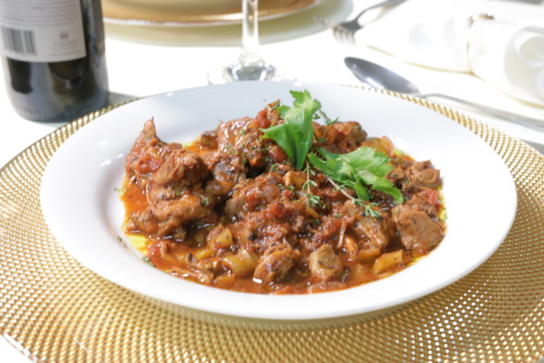
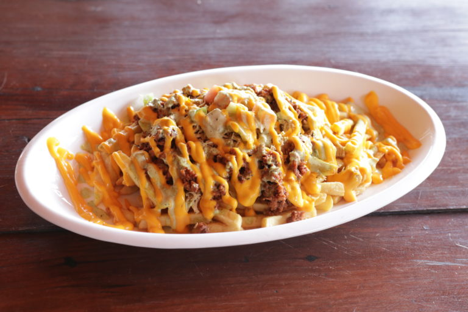

Tres restaurantes para degustar la gastronomía azuana
Azua, RD. Cada pueblo tiene una historia y cultura gastronómica que contar, y Azua no es la excepción. Esta provincia situada al sur de la República Dominicana posee uno de los fogones más ricos en sabores y diversidad, esto como resultado de las confluencias de culturas disímiles como; la española, africana, italiana, entre otras.
De manera que, si amas recorrer destinos cargados de historia y con propuestas culinarias llena de cultura, entonces Azua es el lugar ideal para ti. Aquí algunos restaurantes que debes visitar al venir a este destino sureño.
Restaurante Mesón Suizo
Este rincón gastronómico se encuentra ubicado en la calle 19 de Marzo número 121 en Azua, considerado uno de los
restaurantes más representativos de esta provincia, el cual no solo se destaca por su gran oferta culinaria,
sino que también es un referente por el trato y amabilidad con que reciben a sus visitantes.
Su oferta gastronómica está compuesta por selectos platos criollos que conjugan la historia y cultura de esta provincia con el objetivo de rescatar y enaltecer los fogones de la zona sur.
Entre su gran variedad de platillos se destacan el chivo con coco, chivo guisado, moro con coco, y por supuesto, la bandera dominicana: arroz, habichuela y carne. Otro distintivo de este rincón culinario es el chivo chen, un plato creado por los propietarios del establecimiento, específicamente para realzar la gastronomía local.
Este acogedor espacio gastronómico posee un bar y dos salones de eventos, ideales para la celebración de bodas, cumpleaños, bautizos y reuniones corporativas.

La Esquinita del Sabor
Si prefieres una rica hamburguesa o unas deliciosas papas supremas en vez de un plato más elaborado y gourmet,
entonces tu lugar es La Esquinita del Sabor.
El establecimiento se encuentra ubicado en la avenida Duarte número 14 en Azua. Desde su apertura hace más de 14 años, se ha distinguido por fusionar lo mejor de la comida rápida con los sabores más exquisitos de la cocina criolla sureña. Su menú incluye exquisitos platos de cortes de carne, mariscos y pescados.
Restaurante el Barco Monte Río
Este restaurante se encuentra estratégicamente ubicado frente a la playa Monte Río, en Azua, en una singular
edificación cuyo diseño se asemeja a un barco.
Su oferta gastronómica es todo un referente en la costa sur, compuesta por un extenso menú de cocina gourmet
nacional e internacional, diseñada para complacer hasta los paladares más exigentes.
El Barco es un lugar excelente para la realización de encuentros románticos, reuniones de negocios, cenas familiares, celebraciones de cumpleaños, bautizos y reuniones con amigos.